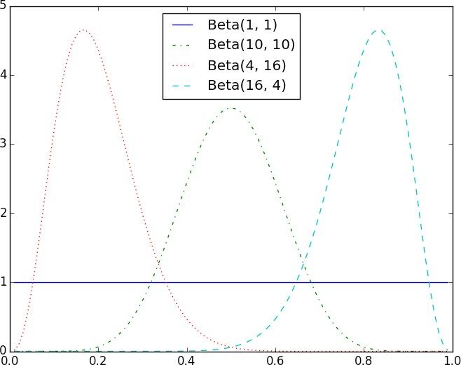
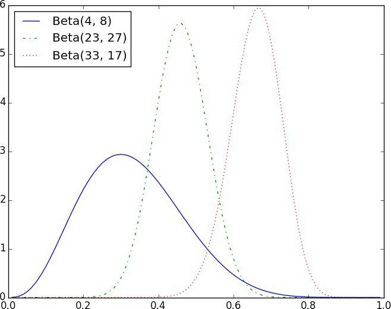

后验分布也是 Beta 分布，这并非偶然。二项分布给出了正面朝上的数字，Beta 是二项分布的共轭先验分布（conjugate prior，http://www.johndcook.com/blog/conjugate_prior_diagram/ ）。这意味着，无论你何时使用从相关的二项分布中得到的观测值更新 Beta 先验分布，你还是会得到一个 Beta 后验分布。
后验分布也是 Beta 分布，这并非偶然。二项分布给出了正面朝上的数字，Beta 是二项分布的共轭先验分布（conjugate prior，http://www.johndcook.com/blog/conjugate_prior_diagram/ ）。这意味着，无论你何时使用从相关的二项分布中得到的观测值更新 Beta 先验分布，你还是会得到一个 Beta 后验分布。7.6 贝叶斯推断
我们所看到的处理方式都包含对检验所做的与概率有关的陈述：“如果原假设正确，那么你观测到极端统计量的概率仅有 3%。”
推断的一个替代方法是将未知参数视为随机变量。分析师（也就是你）从参数的先验分布 （prior distribution）出发，再利用观测数据和贝叶斯定理计算出更新后的后验分布 （posterior distribution）。不再对检验本身给出概率判断，而是对参数本身给出概率判断。
比如，如果未知参数是概率（就像掷硬币的例子），我们使用 Beta 分布 （Beta distribution）作为先验分布，Beta 分布仅对 0 和 1 赋值：
def B(alpha, beta):
"""a normalizing constant so that the total probability is 1"""
return math.gamma(alpha) * math.gamma(beta) / math.gamma(alpha + beta)
def beta_pdf(x, alpha, beta):
if x < 0 or x > 1: # [0, 1]之外没有权重
return 0
return x ** (alpha - 1) * (1 - x) ** (beta - 1) / B(alpha, beta)
一般来说，以上分布的权重中心为：
alpha / (alpha + beta)
alpha 和 beta 越大，分布就越“紧密”。
例如，如果 alpha 和 beta 都是 1，那么刚好是均匀分布（以 0.5 为中心，非常分散）。如果 alpha 比 beta 大很多，那么大多数权重接近 1。如果 alpha 比 beta 小很多，那么大多数权重接近零。图 7-1 展示了几种不同的 Beta 分布。
让我们先假设一个先验分布 p 。如果对硬币是否均匀不预设立场，那么将 alpha 与 beta 都设定为 1。或者如果我们坚信硬币有 55% 的可能正面朝上，就选择让 alpha 等于 55，beta 等于 45。
然后我们多次掷起硬币，结果有 h 次正面朝上，有 t 次背面朝上。根据贝叶斯定理（和一些太过冗繁的数学，此处不赘述），p 的先验分布仍然是 Beta 分布，但参数分别为 alpha ＋ h 和 beta ＋ t 。

图 7-1：Beta 分布举例
假设你掷硬币 10 次并且观测到 3 次正面朝上。
如果你从均匀分布的先验开始（有时候不会采取硬币均匀的立场），那么你的后验分布为 Beta(4, 8)，中心为 0.33。如果你认为所有的可能性都相等，那么你最好的猜测就会非常接近观测到的概率。
如果你从 Beta(20, 20) 开始（表明硬币大致上是均匀的），那么你的后验分布为 Beta(23, 27)，中心为 0.46，这表明可能硬币稍稍倾向于背面朝上。
如果你从 Beta(30, 10) 开始（表明硬币是不均匀的，即有 75% 的可能会正面朝上），那么你的后验分布为 Beta(33, 17)，中心为 0.66。这种情况下，你仍然相信正面朝上的概率会大一些，只是没有一开始那么坚定了。这几个不同的后验分布如图 7-2 所示。

图 7-2：从不同先验分布得到的后验分布
如果你多次掷硬币，无论你最初选择了什么样的先验分布，先验分布对后验分布的影响会越来越小，直到最后得到（几乎）相同的后验分布。
比如，无论你最初对掷硬币的结果有怎样的倾向猜想，当看到 2000 次掷硬币的结果中有 1000 次正面朝上时，你都会很难维持原先的看法（除非你极端地选择了 Beta(1000000, 1) 这样的先验分布）。
有趣的是，这允许我们对假设“基于先验分布和已观测数据，正面朝上的概率介于 49% ～ 51% 的可能性仅有 5%”做出概率判断。这在哲学上不同于论断“如果硬币是均匀的，那么只有 5% 的机会能观测到极端数据”。
用贝叶斯推断进行假设检验是饱受争议的——部分源于它的数学原理非常复杂，部分源于选择先验分布的主观性。本书中我们不会挖掘得太深，但稍作了解还是有益的。